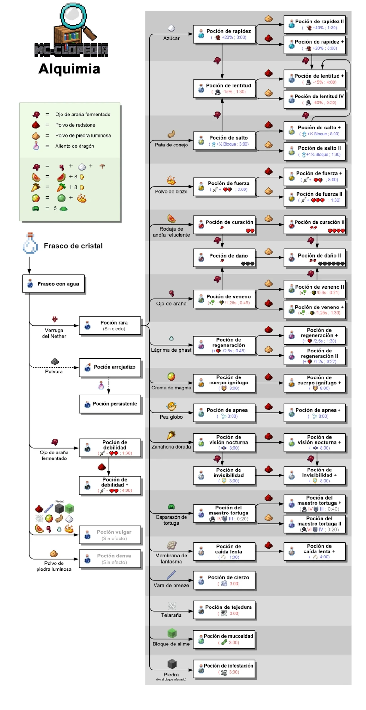

AlquimiaLa alquimia (conocida en inglés como Brewing) es el sistema mediante el cual los jugadores pueden crear pociones con efectos especiales, utilizando una combinación de ingredientes, agua y un soporte para pociones. Estas pociones otorgan ventajas o desventajas temporales que pueden afectar tanto al jugador como a otras entidades del juego.Mediante la alquimia, es posible elaborar pociones que aumenten la velocidad, mejoren la regeneración, permitan respirar bajo el agua, dañen enemigos, entre muchas otras. Las pociones pueden consumirse, lanzarse o aplicarse de manera persistente en un área.Aunque la alquimia permite acceder a una amplia variedad de efectos, no todos los efectos del juego están disponibles en forma de poción. Algunos efectos solo se pueden obtener por medios específicos y no pueden ser replicados mediante pociones.La elaboración de pociones sigue un proceso ordenado: se parte de frascos con agua y se agregan ingredientes en una secuencia determinada para preparar y transformar la mezcla. Existen distintos tipos de ingredientes, cada uno con una función particular, como aplicar efectos, aumentar su potencia, extender la duración o modificar la forma de la poción (como convertirla en arrojadiza o persistente).El sistema de alquimia combina exploración, recolección de recursos y planificación, y es una parte fundamental del juego en modos como Supervivencia, Aventura y en desafíos más complejos como el End o el Nether.A los jugadores que practican la alquimia de forma avanzada o especializada se les conoce como alquimistas. |